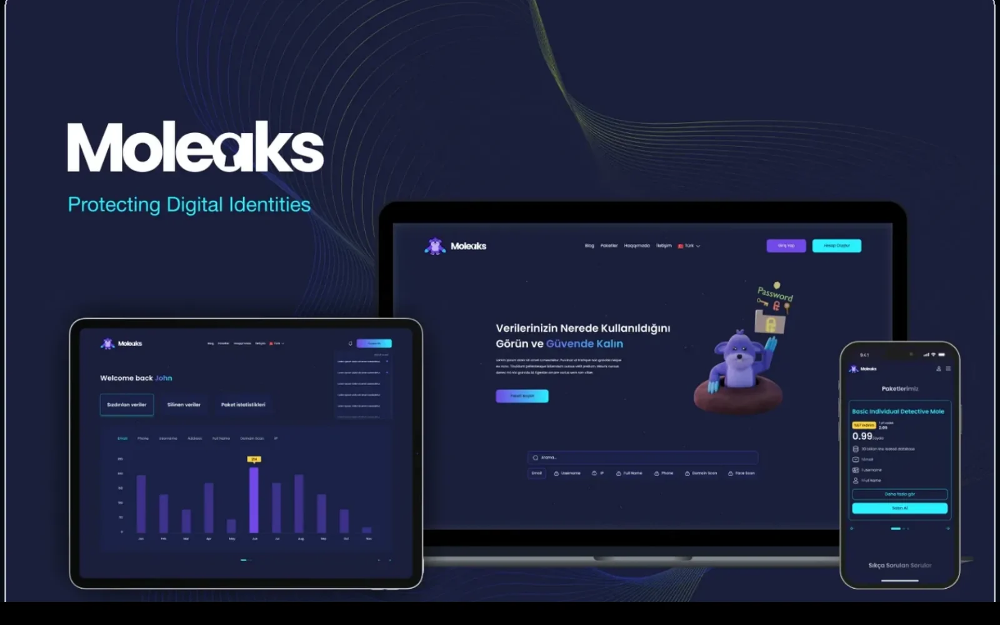

10 / Кибербезопасность
Moleaks — Платформа поиска утёкших данных
Глубокий поиск по email, номеру телефона, домену и распознаванию лиц.

- 4вектора поиска — email, телефон, домен, лицо
- M+строк сканируются за секунды
- SSRбыстрый SEO-дружественный интерфейс на Next.js
01 / Обзор
Moleaks — инструмент проверки для частных лиц и специалистов по кибербезопасности. Он показывает, встречаются ли их данные в утёкших базах в интернете или даркнете: проверить можно адрес электронной почты, номер мобильного телефона, доменное имя или лицо.
02 / Задача
Чаще всего люди узнают об утечке своих данных, только когда аккаунт уже взломан. Базы утечек разрознены, не структурированы и содержат миллионы строк, поэтому проверить их вручную невозможно.
03 / Наш подход
Поиск и анализ разделены. .NET Core API обрабатывает тысячи одновременных запросов, а тяжёлый анализ выполняется в фоне на Python и DeepScanner. Стратегии индексации базы данных позволяют сканировать миллионы строк за секунды.
04 / Результат
Пользователь может проверить email, номер телефона или целый корпоративный домен и получить подробный отчёт об источнике, дате и типе утечки.
05 / Ключевые функции
Что умеет продукт.
- 01
Поиск по нескольким параметрам
Быстрая проверка утёкших баз по email, номеру мобильного телефона и IP-адресу.
- 02
Анализ доменов
Находит утёкшие аккаунты, связанные с корпоративным или личным доменом.
- 03
Поиск по распознаванию лиц
Находит людей на изображениях в интернете по чертам лица.
- 04
Глубокое сканирование
Автоматизированный анализ больших объёмов утёкших данных.
- 05
Отчёты о безопасности
Подробные отчёты об источнике, дате и типе каждой утечки.
06 / Архитектура
Как это устроено.
Асинхронная обработка
Python и DeepScanner работают в фоне, поэтому масштабный анализ никогда не замедляет основную систему.
Оптимизированная база данных
Индексация в MSSQL позволяет сканировать миллионы строк за секунды.
Высокопроизводительный API
.NET Core надёжно обрабатывает тысячи одновременных поисковых запросов.
07 / Технологии
Технологический стек.
- Бэкенд
- .NET Core API
- Фронтенд
- React
- Next.js (серверный рендеринг)
- База данных
- MS SQL Server со стратегиями индексации
- Анализ
- Python
- DeepScanner